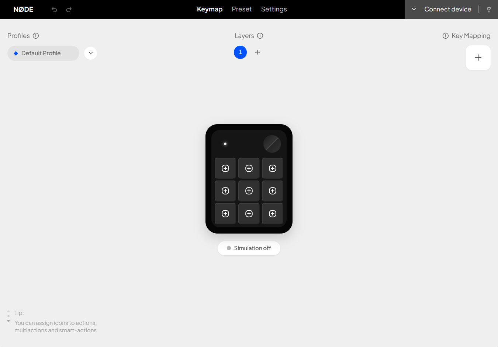

Map it your way
Assign shortcuts, actions, and icons to all nine keys with a clear, direct layout.
A keymap that feels like yoursGive your most-used shortcuts a home. Build keymaps, switch profiles, and tune your dial in one focused desktop studio.

Shape the pad around the way you work, then keep each setup a click away.
Assign shortcuts, actions, and icons to all nine keys with a clear, direct layout.
A keymap that feels like yoursKeep separate setups for editing, streaming, coding, or whatever comes next.
Change context in a tapSet clockwise, counter-clockwise, and press actions for quick control without reaching for the mouse.
Three actions. One dial.Set up your Grid Macro 1 with the desktop studio. Start in simulation mode, then connect your pad when you’re ready.
Choose the assisted Windows installer or grab the portable ZIP.
Map your keys and encoder, or start from a workflow preset.
Connect your Grid Macro 1 over USB, or test your setup in simulation mode.